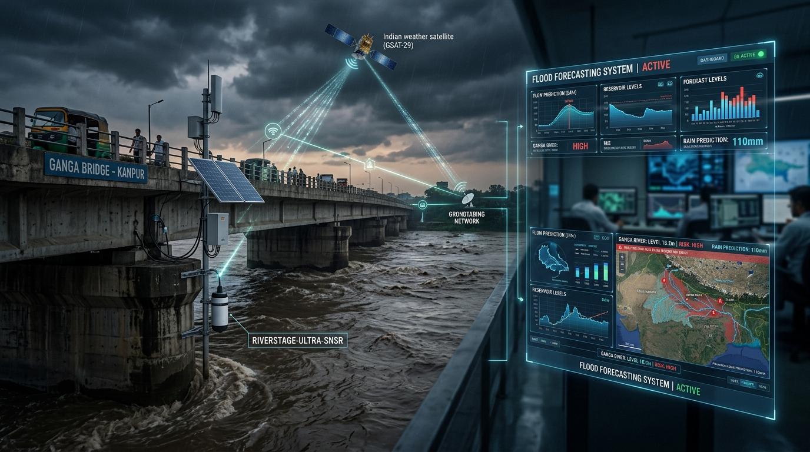

HydroCast Technical Documentation Library

Welcome to the comprehensive technical documentation for HydroCast: Real-Time Operational Flood Forecasting & Basin Intelligence for the Panchganga River Catchment (Kolhapur District, Maharashtra, India).
Technology & Engineering Stack
| Area | Tool |
|---|---|
| OS | |
| Languages | |
| Frameworks | |
| Hydrology & ML | |
| Databases & Archival | |
| IoT & Alerting | |
| Infrastructure |
Technical Modules
| Module | Document | Description |
|---|---|---|
| System Architecture | Architecture.md |
12-Step operational prediction pipeline, ML recalibration loop, multi-container Docker, and cold storage. |
| API & Backend | Backend.md |
FastAPI REST services, SlowAPI rate limiting, admin JWT tokens, manual triggers, and WebSockets. |
| Frontend Dashboard | Frontend.md |
Next.js 14 App Router, Peak Flood Strike Horizon (±2.0h CI), 2D SVG Cross-Section, and Docker runtime. |
| Database Architecture | Database.md |
PostgreSQL production schema, pipeline_step_log, Supabase cloud sync, and Parquet cold storage. |
| Open-Meteo & ECMWF | Openmeteo.md |
ECMWF IFS HRES 9km QPF ingestion, enterprise exponential backoff retry wrappers, and station routing. |
| Rain Gauge Network | Raingauge_Station.md |
18 primary and alternate stations, geographical topology, and dynamic selection. |
| Basin Hydrology | Hydrology.md |
1,837.2 km² Panchganga basin physiography, subbasins S1–S9, SCS-CN, SCS Dimensionless UH, and closed-loop ML recalibration. |
| Runoff Computation | Runoff_Computation.md |
Mathematical runoff continuum, SCS-CN loss, SCS unit hydrograph convolution, and Muskingum reach routing. |
| HEC-HMS Automation | HMS.md |
Headless USACE HEC-HMS 4.13 batch runner, pure-Python physical solver, SCS-CN loss, SCS-UH, Muskingum routing, and baseflow recession. |
| River Hydraulics | Hydraulics.md |
Divided Channel Method ($n_{\text{main}}=0.031, n_{\text{flood}}=0.070$), surveyed bed slopes ($1:2529, 1:4641, 1:7700$), and K.T. weir hydraulics. |
| Rating Curves | Stage_Conversion_Discharge.md |
Bi-directional monotonic PCHIP rating curves ($dQ/dh > 0$) for Shivaji Bridge & Rajaram Weir. |
| Model Calibration | Calibration_Validation.md |
Spearman rank $\rho$, NSE, PBIAS, real-time ML optimization, and WRD benchmark calibration. |
| ML Calibration Engine | ML_Calibration_Engine.md |
Details the Physics-Informed Machine Learning engine that actively synchronizes optimal Muskingum and Subbasin Lag parameters back to the HEC-HMS model dynamically. |
| Rainfall Validation | Rainfall_Validation_Pipeline.md |
Observed rainfall ingestion, ground truth telemetry verification, and QC checks. |
| WRD Ground Truth | WRD_Historical_Rating_Curve_CrossCheck.md |
Historical flood marks cross-verification vs Maharashtra WRD government records. |
| IoT Telemetry | IoT_Telemetry.md |
ThingSpeak ultrasonic radar level sensor, 549.35m datum, live stage polling, and ML recalibration integration. |
| GIS Vector Layers | Shpfiles.md |
GeoJSON subbasin delineations, stream network routing, and DEM processing. |
| Engineering Autopsy | Errors_Mistakes_Engineering_Assumptions.md |
Historical post-mortem of bed slope distortion, wetted perimeter collapse, and v3.0 edge-case mitigations. |
| System Novelty | Novelty_of_this_System.md |
12 core scientific and architectural innovations of HydroCast vs traditional warning systems. |
| PI Research Report | Accuracy_Analysis_PI_Report.md |
Formal research report prepared for the Principal Investigator on model accuracy. |
| Production Roadmap | ROADMAP.md |
5 Open-source production hardening pillars: Dockerization, alerting, archival, security, and retries. |
| Operations Manual | Deployment_Operations.md |
Docker Compose multi-container, DDMA Telegram bot dispatch, scheduled Parquet pruning, and NGINX setup. |